（五）编译与编译后文件部署：
Linux :
编译：
在编译服务器下： 北京 ： 39.106.60.108
进入/data/canonchain
./do_build
部署：
无需部署；在用脚本do_test启动节点的时候会自动scp远程服务器的编译文件
windows :
编译：
在编译服务器下： 上海 ： 101.132.47.126
1. 打开git 进入D:\src\witness\canonchain目录 拉取更新代码
2. 打开cmake ;
在Ungrouped Entries 下的 Active_network 中选择需要测试的网络
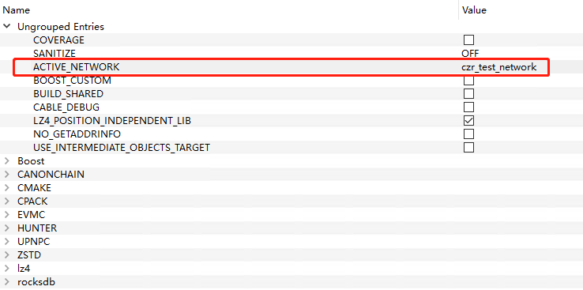
在Cmake下的 Cmake_build_type 中选择测试版本
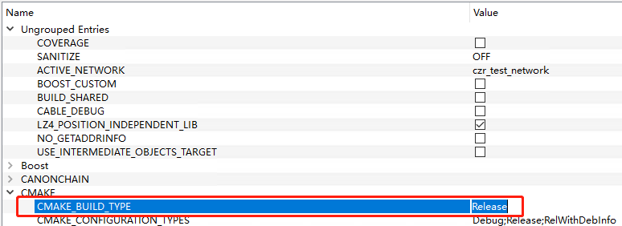
其它需要增加或者移除库文件选择 Add Entry 或者 Remove Entry即可
3. 点击Configure;
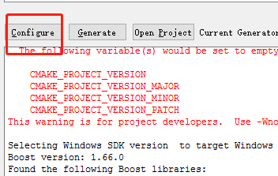
4. Configure正常之后(如图1) 点击Generate（如图2）
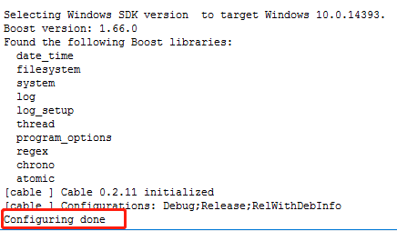 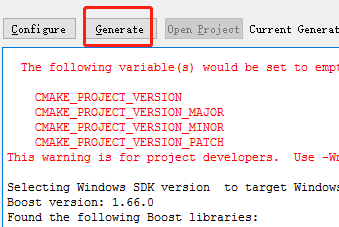
（图1） （图2）
5. Generate正常（如图3）之后点击Open Project（如图4）打开项目
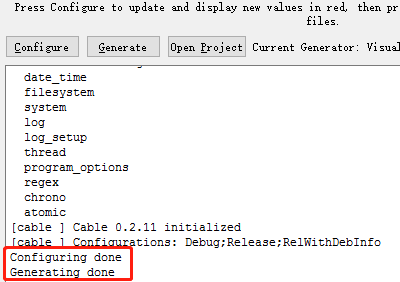 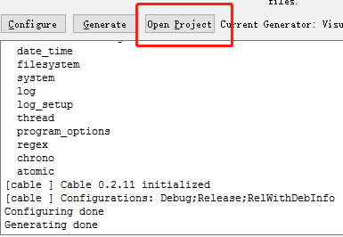
（图3） （图4）
6. 选择与cmake相对应的编译版本
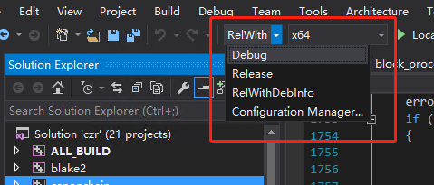
7. 打开项目后 右键选择cryptopp 选择Build Dependencies 选择 Build Customizations 选择masm
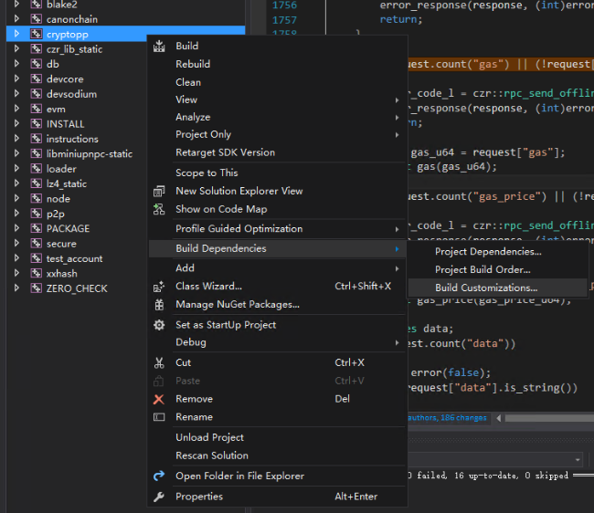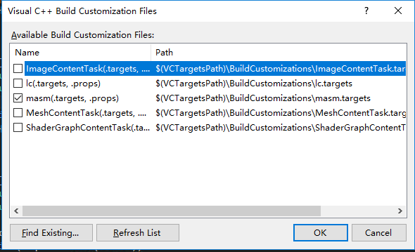
8. 打开cryptopp层级目录 右键选择Source Files 选择 Add 选择Existing Items 在标记出来的目录下 选择标记出来的文件
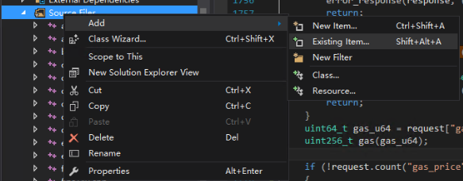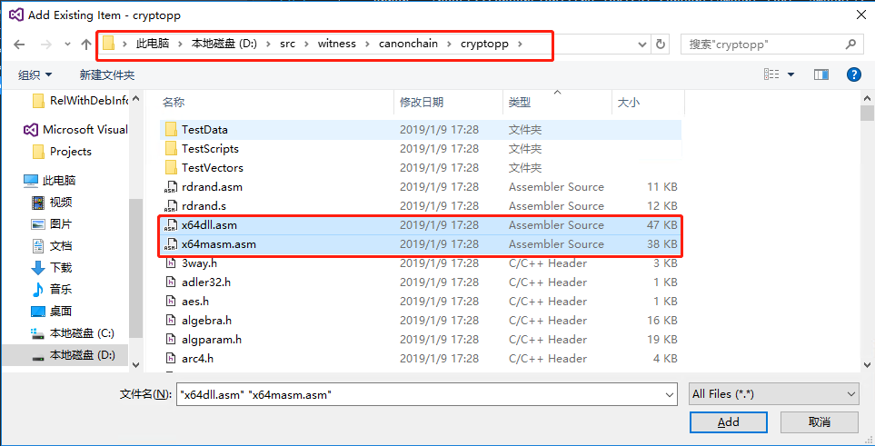
9. 右键选择canonchain 选择Build 进行编译即可
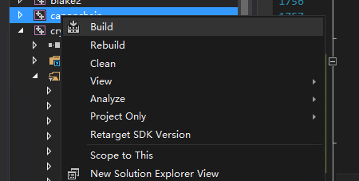
部署 ：
根据选择的编译版本 编译完成后邮件选择canonchain 在相应的路径下获取相应的编译文件
如：选择的编译版本是RelWithDebInfo（如图2） 则需要进入RelWithDebInfo目录下（如图3）
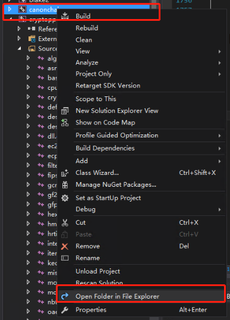 [1].jpg) 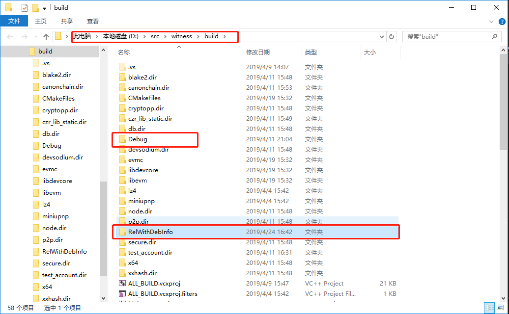
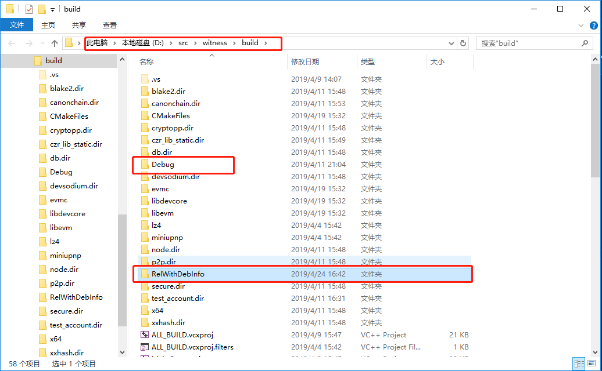
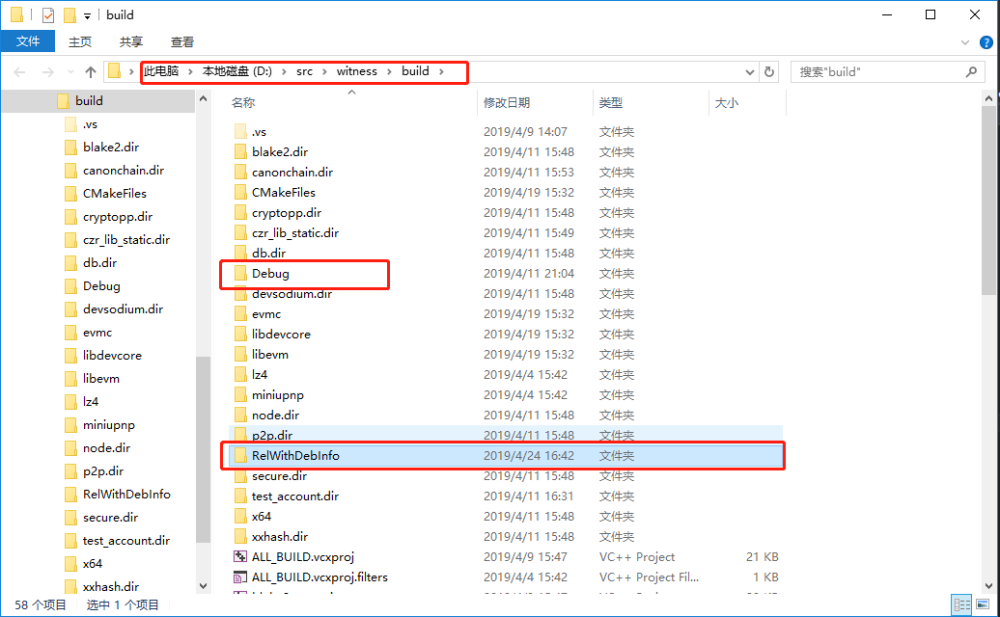 进入相应的目录后打包压缩 canonchain.exe与canonchain.pdb文件（如果是release版本，则canonchain.pdb不需要进行压缩） 复制到远程机子的canonchain_send或者canonchain_witness目录下 解压缩即可
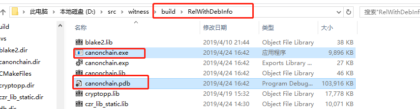